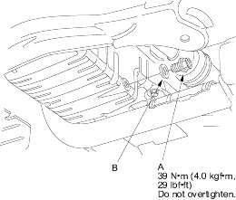
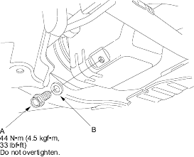

Change interval
Every 10,000 miles (16,000 km) or 12 months
(Normal conditions)
Every 5,000 miles (8,000 km) or 6 months
(Severe conditions)
- Warm up the engine.
- Remove the drain bolt (A) and drain the engine oil.
Except D17A8 engine:

D17A8 engine:

- Reinstall the drain bolt with a new washer (B).
- Refill with the recommended oil (see page 3-2).
Capacity
Except D17A8 engine:
3.3 l (3.5 US qt, 2.9 Imp qt) at oil change.
3.5 l (3.7 US qt, 3.1 Imp qt) at oil change
including filter.
4.2 l (4.4 US qt, 3.7 Imp qt) after engine overhaul.
D17A8 engine:
3.0 l (3.2 US qt, 2.6 Imp qt) at oil change.
3.2 l (3.4 US qt, 2.8 Imp qt) at oil change
including filter.
4.2 l (4.4 US qt, 3.7 Imp qt) after engine overhaul.
- Run the engine for more than 3 minutes then check for oil leakage.